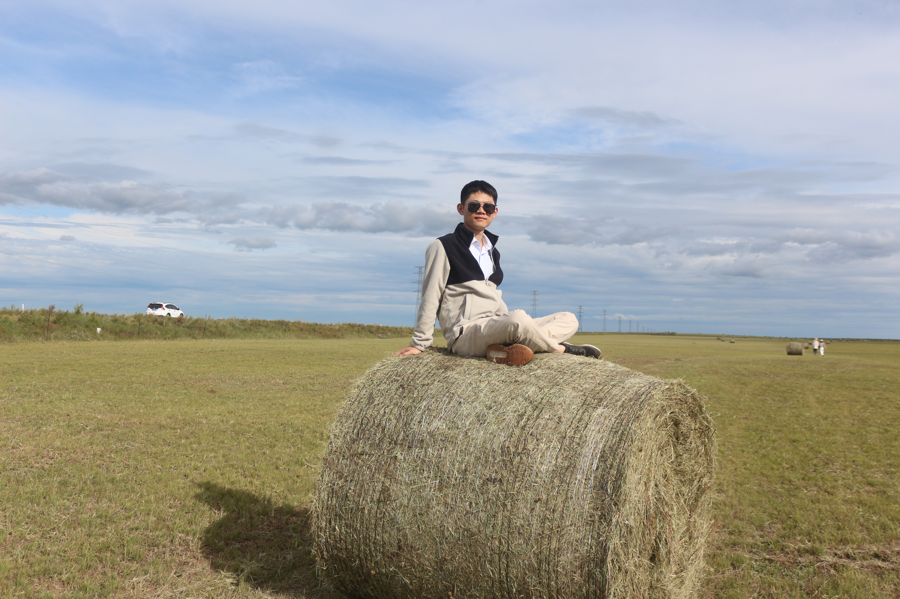

Jie Wang (王杰)
Associate Professor (优青副研究员)
Research Affiliate
AMSS-CAS
办公室（office）：思源楼，518
地址（address）：北京市海淀区中关村东路55号
Links
Google Scholar
GitHub
Contact: wangjie212@amss.ac.cn

I am an associate professor at AMSS-CAS in Beijing, China since July 2021. I was previously a postdoctoral reseacher working with Prof. Victor Magron and Prof. Jean-Bernard Lasserre at LAAS-CNRS in Toulouse, France from July 2019 to June 2021. Formerly, I was a postdoc working with Prof. Bican Xia at Peking University. I received my doctor's degree of mathematics under the supervision of Prof. Xiaoshan Gao at AMSS-CAS in July 2017.
My research interests include polynomial optimization, semidefinite programming, real algebraic geometry, symbolic computation and their applications in operation, quantum information, control system, computer vision, etc.
Currently, I am working on (both commutative and noncommutative) polynomial optimization and its applications in diverse areas, e.g., control theory, computer vision, neural networks, quantum information, power systems, etc. In particular, I am focusing on exploiting various structures (sparsity, symmetry...) to improve the scalability of the moment-SOS hierarchy for polynomial optimization.
Our book (with Victor Magron) entitled "Sparse Polynomial Optimization: Theory and Practice" has been published in the Series on Optimization and Its Applications, World Scientific Press.

欢迎加入多项式优化课题组！招收访问学生、硕博生与博士后，详情请见招生指南、招博士后以及中国科学院大学招生。
For available postdoctoral/tenure-track/tenured positions at AMSS-CAS, please check out positions, and feel free to send me an email to discuss potential collaborations.
News & Activity
- 2025.7.21-24, ICCOPT in Los Angeles, United States.
- 2025.5.16-19, 全国数学优化大会 in Shanghai.
- 2025.1.13-17, "100 Years of Matrix Mechanics" International Symposium in Sanya.
- 2024.7.28-8.2, Oberwolfach Workshop - Polynomial Optimization for Nonlinear Dynamics: Theory, Algorithms, and Applications in Germany.
- 2023.10.15-18, 2023 INFORMS Annual Meeting in Phoenix, United States.
Introduction to selected works
1. Sparse polynomial optimization:
Sparsity is a common structure in many application problems. We proposed the novel notion of term sparsity patterns to describe
monomial sparsity encoded in polynomial optimization problems, complementing to the well-known correlative sparsity. We further developed various sparsity-adapted moment-SOS
hierarchies for solving polynomial optimization problems with different sparsity patterns (correlative and/or term sparsity) and released a structured POP solver TSSOS.
With these developments, we can successfully tackle the AC-OPF problem with over 7000 variables and 30000 constraints.
- TSSOS: A Moment-SOS Hierarchy That Exploits Term Sparsity, SIAM Journal on Optimization, 2021.
- Chordal-TSSOS: a moment-SOS hierarchy that exploits Term Sparsity with Chordal Extension, SIAM Journal on Optimization, 2021.
- CS-TSSOS: Correlative and Term Sparsity for Large-Scale Polynomial Optimization, ACM Transactions on Mathematical Software, 2022.
- Certifying Global Optimality of AC-OPF Solutions via Sparse Polynomial Optimization, Electric Power Systems Research, 2022.
2. Noncommutative polynomial optimization and quantum information: Noncommutative polynomial optimization studies optimization problems over noncommutative polynomials, which has lots of applications in quantum information. The underlying theory of noncommutative optimization is \(C^∗\)-algebras. We extended the sparsity-exploiting moment-SOS framework to the noncommutative setting and released a structured NCPOP solver NCTSSOS. In addition, we built the positivity theory for state polynomials and constructed a moment-SOHS hierarchy for optimization over state polynomials. With these developments, we can compute the maximal quantum violation of nonlinear Bell inequalities.
- Exploiting Term Sparsity in Noncommutative Polynomial Optimization, Computational Optimization and Applications, 2021.
- State Polynomials: Positivity, Optimization and Nonlinear Bell Inequalities, Mathematical Programming, 2023.
3. Efficiently solving low-rank SDPs: Many SDPs from practice possesses some special structures. For instance, SDPs arising from the moment-SOS hierarchy typically have low-rank optimal solutions; SDP relaxations for many combinatorial optimization problems have unit diagonal. By exploiting these structures, we developed a manifold optimization based augmented Lagrangian algorithm for efficiently solving low-rank SDPs and released a structured SDP solver ManiSDP.
- Solving Low-Rank Semidefinite Programs via Manifold Optimization, Journal of Scientific Computing, 2025.
4. Polynomial matrix optimization: Polynomial matrix inequalities (PMI) are generalizations of nonnegative polynomials and widely appear in optimization and control. We extended the moment-SOS hierarchy to handle polynomial matrix inequalities, allowing to solve related optimization problems. We also provided a simple procedure for extracting optimal solutions in this case.
- A Moment-SOS Hierarchy for Robust Polynomial Matrix Inequality Optimization with SOS-Convexity, Mathematics of Operations Research, 2024.
5. Nonnegativity and circuit polynomials: Sums of nonnegative circuit polynomials (SONC) are alternative certificates of polynomial nonnegativity, being independent of SOS certificates. We provided sufficient conditions for a nonnegative polynomial to have such certificates. We proved that SONC decompositions can preserve term sparsity of polynomials and proposed a SONC-based unconstrained polynomial optimization algorithm via SOCP.
- Nonnegative Polynomials and Circuit Polynomials, SIAM Journal on Applied Algebra and Geometry, 2022.
- SONC Optimization and Exact Nonnegativity Certificates via Second-Order Cone Programming, Journal of Symbolic Computation, 2021.
- Weighted Geometric Mean, Minimum Mediated Set, and Optimal Simple Second-Order Cone Representation, SIAM Journal on Optimization, 2024.
6. Certifying ground-state properties of quantum many-body systems: A ubiquitous problem in quantum physics is to understand the ground-state properties of many-body systems. It is known that variational approaches offer upper bounds on the ground-state energy and relaxations of the ground-state problem based on semidefinite programming provide lower bounds to the ground-state energy. We showed that the combination of the two classes of approaches can be used to derive certifiable bounds on the value of any observable in the ground state, such as correlation functions of arbitrary order, structure factors, or order parameters. We illustrated the power of this approach in paradigmatic examples of 1D and 2D spin-one-half Heisenberg models. To improve the scalability of the method, we exploit the symmetries and sparsity of the considered systems to reach sizes of hundreds of particles at much higher precision than previous works. Our analysis therefore shows how to obtain certifiable bounds on many-body ground-state properties beyond energy in a scalable way.
- Certifying Ground-State Properties of Many-Body Systems, Physical Review X, 2024.
Research plans
1. Structured polynomial optimization
We will continue the research line of exploiting structures of polynomial optimization problems, focusing on exploiting multiple structures simultaneously
and extracting optimal solutions in the presence of different structures.
2. Noncommutative polynomial optimization and quantum information
We will continue the research line of noncommutative polynomial optimization and explore more applications in quantum information.
3. Developing an advanced structured SDP solver
We will continue the research line of efficiently solving low-rank SDPs, particularly taking more structures into account. The long-term goal is to develop an advanced, robust structured SDP solver.
4. Tackling important applications via structured polynomial optimization in optimal power flow, computer vision, combinatorial optimization, neutral networks, signal processing...